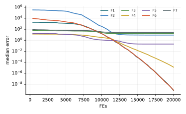

Chương 12 · Mục 12.1Chapter 12 · Section 12.1
Thuật toán bầy salpSalp Swarm AlgorithmSalp Swarm Algorithm — SSASSA — a leader pulls a chain
Châu Văn Vân · PTITHCM
Mục tiêu bài họcLearning objectives
Sau chương này, bạn có thểAfter this chapter you will be able to
- Mô tả chuỗi salp và vai trò của con dẫn đầu, con bám đuôi.Describe salp chains and the roles of leader and followers.
- Viết công thức cập nhật con dẫn đầu với hệ số c1 giảm theo hàm mũ.Write the leader update with the exponentially decaying c1.
- Viết quy tắc bám đuôi xi = (xi + xi−1)/2 và giải thích ý nghĩa.Write the follower rule xi = (xi + xi−1)/2 and explain it.
- Đọc kết quả thực nghiệm và nhận diện điểm yếu của SSA.Read the experiments and identify SSA's weak points.
Tổng quanOverview
Salp: sinh vật biển bơi theo chuỗiSalps: marine animals that swim in chains
- Do Mirjalili và cs. đề xuất năm 2017 (Advances in Engineering Software 114).Proposed by Mirjalili et al. in 2017 (Advances in Engineering Software 114).
- Salp có thân trong suốt hình thùng, di chuyển bằng cách bơm nước qua cơ thể.Salps have transparent barrel-shaped bodies and move by pumping water through them.
- Ở đại dương sâu, salp thường nối thành chuỗi, có thể giúp di chuyển và kiếm ăn hiệu quả hơn.In deep oceans salps often link into chains, which may help locomotion and foraging.
- SSA chia quần thể thành con dẫn đầu (bơi quanh nguồn thức ăn) và con bám đuôi (đi theo con phía trước).SSA splits the population into leaders (swimming around the food) and followers (trailing the one ahead).
Ý tưởng cốt lõiCore idea
Chỉ con dẫn đầu biết thức ăn ở đâu. Mỗi con còn lại chỉ nhìn con phía trước và bơi tới điểm giữa, nên thông tin lan dần dọc chuỗi.Only the leader knows where the food is. Every other salp only watches the one ahead and swims to the midpoint, so information propagates down the chain.
Các thành phầnComponents
Chuỗi và thức ănChain and food
- ChuỗiChainChuỗiChain
- Quần thể x1, …, xn theo thứ tựThe ordered population x1, …, xn
- Dẫn đầuLeadersDẫn đầuLeaders
- Mã gốc dùng nửa đầu quần thể làm con dẫn đầuThe original code uses the first half as leaders
- Bám đuôiFollowersBám đuôiFollowers
- Nửa sau, mỗi con theo con ngay phía trướcThe second half, each trailing the one just ahead
Thức ănFood
F = xbestHệ số thăm dòExploration factor
c1 = 2e−(4t/T)²Các bướcSteps
Các bước của SSASSA step by step
Chỉ một tham số tự điều chỉnh là c1.The only self-adjusting parameter is c1.
- Khởi tạo chuỗi salp ngẫu nhiên; F ← con tốt nhất.Initialize the chain at random; F ← best salp.
- Tính c1 theo vòng lặp.Compute c1 for this iteration.
- Cập nhật con dẫn đầu quanh F.Update the leaders around F.
- Cập nhật con bám đuôi theo con phía trước.Update the followers from the one ahead.
- Kẹp biên, đánh giá, cập nhật F; lặp lại.Clamp, evaluate, update F; repeat.
2 – 5 vòng lặp chínhmain loop
Thuật toánAlgorithm
Lưu đồFlowchart
Mô hình toán họcMathematical model
Con dẫn đầu bơi quanh thức ănLeaders swim around the food
- c2, c3 ~ U(0, 1) cho từng chiều; c3 chọn hướng cộng hay trừ.c2, c3 ~ U(0, 1) per dimension; c3 picks the sign.
- c1 giảm từ 2 về khoảng 0 rất nhanh: tại t = T/4 chỉ còn 0.74.c1 falls from 2 to about 0 quickly: at t = T/4 it is already 0.74.
- Bài báo in điều kiện “c3 ≥ 0” (luôn đúng); mã gốc dùng ngưỡng 0.5 như ở đây.The paper prints “c3 ≥ 0” (always true); the original code uses the 0.5 threshold shown here.
Mô hình toán họcMathematical model
Con bám đuôi tới điểm giữaFollowers move to the midpoint
- Bài báo dẫn ra công thức này từ định luật chuyển động Newton với vận tốc đầu bằng 0 và bước thời gian bằng 1.The paper derives this from Newton's law of motion with zero initial speed and unit time step.
- Thông tin từ F lan dọc chuỗi với tốc độ một bậc mỗi vòng, giúp giữ đa dạng.Information from F travels one link per iteration down the chain, preserving diversity.
- Con bám đuôi không dùng số ngẫu nhiên nào: mọi tính ngẫu nhiên đến từ con dẫn đầu.Followers use no random numbers: all randomness comes from the leaders.
Tham sốParameters
Tham số của SSASSA parameters
| Tham sốParameter | Ý nghĩaMeaning | Giá trị thường dùngTypical value |
|---|---|---|
| n | Số salpNumber of salps | 30 |
| c1 | Biên độ quanh thức ăn, tự giảmAmplitude around the food, self-decaying | 2e−(4t/T)² |
| c2, c3 | Số ngẫu nhiên đều cho từng chiềuUniform random numbers per dimension | U(0, 1) |
SSA không có tham số cần chỉnh ngoài n và T.SSA has no tunable parameter besides n and T.
Mô phỏngSimulation
Chuỗi 12 salp trên địa hình chungA chain of 12 salps on the shared landscape
Đường nối thể hiện thứ tự trong chuỗi; chấm cam là con dẫn đầu, chấm xanh là con bám đuôi.Lines show the chain order; orange dots are leaders, teal dots followers.
Theo mã gốc: nửa đầu chuỗi là con dẫn đầu.As in the original code: the first half of the chain are leaders.
Ví dụ tính tayWorked example
Một bước của con dẫn đầu và một con bám đuôiOne leader step and one follower step
- c1 = 2e−1 = 0.7358; (ub − lb)c2 + lb = (0, −3).c1 = 2e−1 = 0.7358; (ub − lb)c2 + lb = (0, −3).
- Bước: c1 · (0, −3) = (0, −2.2073).Step: c1 · (0, −3) = (0, −2.2073).
Kết quảResult
- Chiều 1: c3 = 0.7 ≥ 0.5 nên F − 0 = 1; chiều 2: c3 = 0.3 nên F + (−2.2073) = −0.207.Dim 1: c3 = 0.7 ≥ 0.5 so F − 0 = 1; dim 2: c3 = 0.3 so F + (−2.2073) = −0.207.
- Con dẫn đầu mới: (1, −0.207).New leader: (1, −0.207).
- Con bám đuôi tại (3, 4) tới ((3 + 1)/2, (4 − 0.207)/2) = (2, 1.896).A follower at (3, 4) moves to ((3 + 1)/2, (4 − 0.207)/2) = (2, 1.896).
Các biến thểVariants
Hướng cải tiếnDirections of improvement
MSSAMSSA
Bản đa mục tiêu trong cùng bài báo gốc, dùng kho Pareto.The multi-objective version in the same original paper, with a Pareto archive.
SSA nhị phânBinary SSA
Hàm chuyển S/V cho chọn đặc trưng.S/V transfer functions for feature selection.
SSA hỗn loạnChaotic SSA
Thay c2, c3 bằng ánh xạ hỗn loạn.Replace c2, c3 with chaotic maps.
Bám đuôi có trọng sốWeighted followers
Thêm hệ số quán tính vào quy tắc điểm giữa.Add an inertia weight to the midpoint rule.
Ứng dụngApplications
Ứng dụng của SSASSA applications
Bài báo gốc đã áp dụng SSA cho nhiều bài toán thiết kế kỹ thuật.The original paper applied SSA to many engineering design problems.
Thiết kế kỹ thuậtEngineering design
Cánh quạt tàu thủy, dầm, bình áp lực.Marine propellers, beams, pressure vessels.
Quang họcOptics
Thiết kế ống dẫn sóng tinh thể quang tử (trong bài gốc).Photonic crystal waveguide design (in the original paper).
Năng lượngEnergy
Ước lượng tham số pin quang điện.PV parameter estimation.
Học máyMachine learning
Chọn đặc trưng, huấn luyện mạng nơ-ron.Feature selection, neural network training.
Thực nghiệm · SSAExperiment · SSA
Kết quả trên bộ 7 hàm, D = 10, 30 lần chạyResults on the 7-function suite, D = 10, 30 runs
| HàmFunction | Trung bìnhMean | Độ lệchStd | Trung vịMedian | so PSOvs PSO |
|---|---|---|---|---|
| F1 · Sphere | 0 | 0 | 0 | ≈ |
| F2 · Rosenbrock | 1.73e+2 | 3.63e+2 | 8.82e+0 | − |
| F3 · Rastrigin | 1.66e+1 | 6.67e+0 | 1.64e+1 | − |
| F4 · Ackley | 5.98e−1 | 9.13e−1 | 1.30e−5 | − |
| F5 · Griewank | 2.19e−1 | 1.08e−1 | 2.07e−1 | − |
| F6 · Shifted Sphere | 0 | 0 | 0 | ≈ |
| F7 · Shifted Rastrigin | 2.73e+1 | 1.28e+1 | 2.64e+1 | − |
- Sai số f(xbest) − f* sau 20 000 lần đánh giá; n = 30; tham số mặc định của bài gốc; giá trị < 10−8 ghi là 0.Error f(xbest) − f* after 20,000 evaluations; n = 30; default parameters of the original paper; values < 10−8 shown as 0.
- Cột cuối: Wilcoxon rank-sum với PSO (α = 0.05): + tốt hơn, − kém hơn, ≈ không khác biệt.Last column: Wilcoxon rank-sum vs PSO (α = 0.05): + better, − worse, ≈ no difference.
- Xếp hạng Friedman trung bình: 10.21, đứng thứ 12/18 trong 18 thuật toán của giáo trình.Average Friedman rank: 10.21, position 12/18 among the textbook’s 18 algorithms.
Thực nghiệm · SSAExperiment · SSA
Đường hội tụ (trung vị 30 lần chạy)Convergence (median of 30 runs)

Mã nguồnSource code
Mã nguồn PythonPython source code
Đoạn trích phần cập nhật chính; tệp đầy đủ có chú thích và tham số mặc định theo bài gốc.Excerpt of the main update; the full file documents the default parameters of the original paper. code/si/algorithms/ssa.py
while not prob.done: t += 1 c1 = 2 * np.exp(-(4 * t / T) ** 2) F = prob.best_x.copy() for i in range(n): if i < n / 2: c2, c3 = rng.random(prob.dim), rng.random(prob.dim) step = c1 * ((prob.ub - prob.lb) * c2 + prob.lb) X[i] = np.where(c3 < 0.5, F + step, F - step) else: X[i] = (X[i] + X[i - 1]) / 2 X = prob.clip(X) prob(X) return prob.best_x, prob.best_f
Chạy lại toàn bộ thực nghiệm: python -m experiments.run_continuous trong thư mục code/ (xem PROTOCOL.md).Reproduce all experiments: python -m experiments.run_continuous inside code/ (see PROTOCOL.md).
Đánh giáAssessment
Đơn giản tối đaAs simple as it gets
Điểm mạnhStrengths
- Không có tham số cần chỉnh; mã cực ngắn.No parameter to tune; extremely short code.
- Cơ chế bám đuôi giữ đa dạng tốt hơn khi mọi cá thể cùng đuổi theo một điểm.The follower chain keeps more diversity than everyone chasing one point.
- Kết quả F6 = F1 (bằng 0): SSA không thiên lệch về gốc tọa độ trên Sphere.F6 equals F1 (both 0): SSA shows no origin bias on Sphere.
Hạn chế và biến thểLimitations and variants
- Con dẫn đầu nhảy theo biên độ tỉ lệ với cả miền tìm kiếm cho tới khi c1 nhỏ; khai thác chậm trên hàm đa đỉnh.Leaders jump with an amplitude proportional to the whole range until c1 is small; slow exploitation on multimodal functions.
- Trong thực nghiệm, SSA kém PSO trên F2–F5 và F7 (thứ hạng Friedman 10.21).In the experiments SSA is worse than PSO on F2–F5 and F7 (Friedman rank 10.21).
- Hàm c1 giảm rất nhanh: sau nửa quá trình gần như chỉ còn bám đuôi.The c1 schedule decays fast: after half the run, mostly followers move.
Bài tập và thực hànhExercises and labs
Luyện tập: tính tay rồi lập trìnhPractice: by hand, then in code
Bài tập lý thuyếtTheory exercises
- Tính c1 tại t/T = 0, 0.25, 0.5, 1.Compute c1 at t/T = 0, 0.25, 0.5, 1.
- Sau bao nhiêu vòng thì thông tin của F tới con salp thứ 10?After how many iterations does information from F reach salp 10?
- Vì sao điều kiện “c3 ≥ 0” trong bài báo là lỗi in?Why is “c3 ≥ 0” in the paper a misprint?
Thực hành Python / MATLABPython / MATLAB labs
- Chạy SSA với tỉ lệ dẫn đầu 1 con và n/2 con; so sánh.Run SSA with 1 leader and with n/2 leaders; compare.
- Thay lịch c1 bằng giảm tuyến tính; đo trên Rastrigin.Replace the c1 schedule with a linear decay; measure on Rastrigin.
- Vẽ đường đi của con salp cuối chuỗi.Plot the path of the last salp in the chain.
Tài liệu tham khảoReferences
Đọc thêm: các bài báo gốcFurther reading: the original papers
- S. A. Uymaz, G. Tezel, and E. Yel, “Artificial algae algorithm (AAA) for nonlinear global optimization,” Applied Soft Computing, vol. 31, pp. 153–171, 2015, doi: 10.1016/j.asoc.2015.03.003.
- S. Mirjalili, A. H. Gandomi, S. Z. Mirjalili, S. Saremi, H. Faris, and S. M. Mirjalili, “Salp Swarm Algorithm: A bio-inspired optimizer for engineering design problems,” Advances in Engineering Software, vol. 114, pp. 163–191, 2017, doi: 10.1016/j.advengsoft.2017.07.002.
Tóm lạiIn short
Cảm ơn các bạn đã theo dõiThank you for your attention
Châu Văn Vân · PTITHCM · Tài liệu gốc: Mirjalili và cs., Advances in Engineering Software 114, 2017Original paper: Mirjalili et al., Advances in Engineering Software 114, 2017